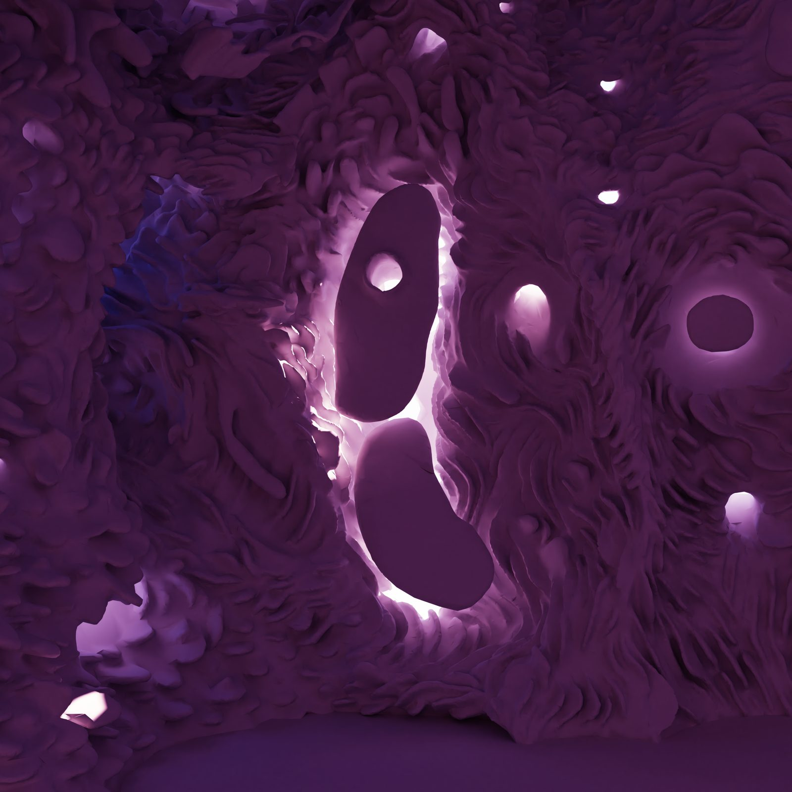
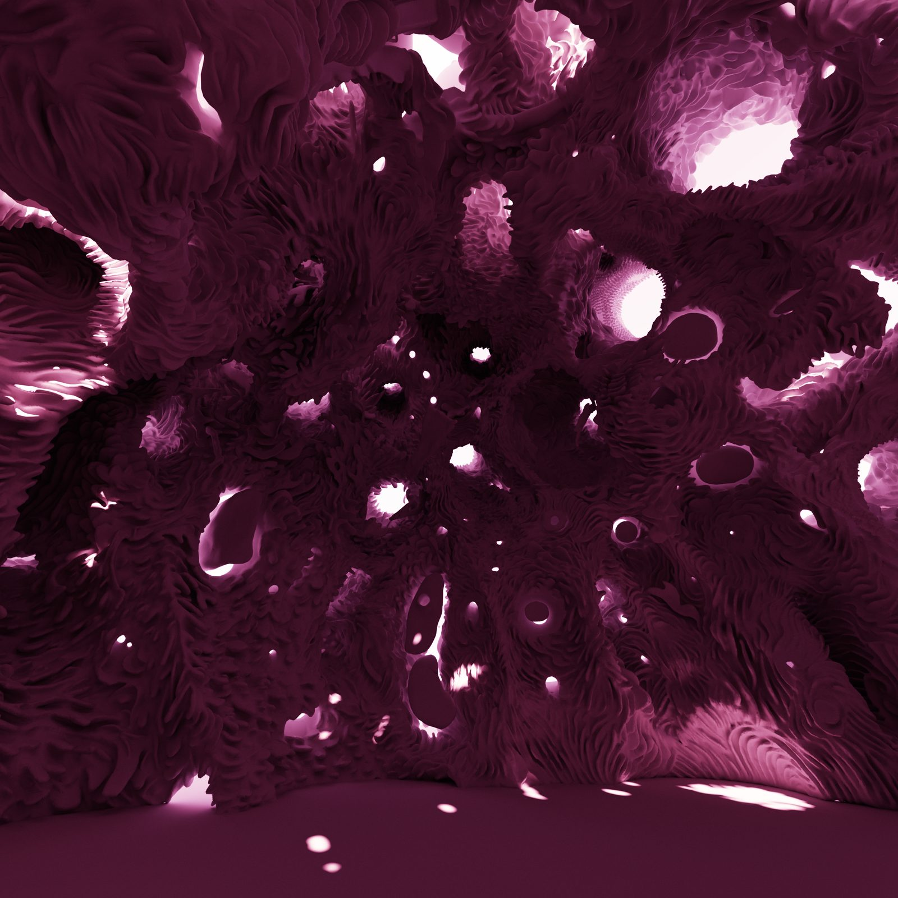
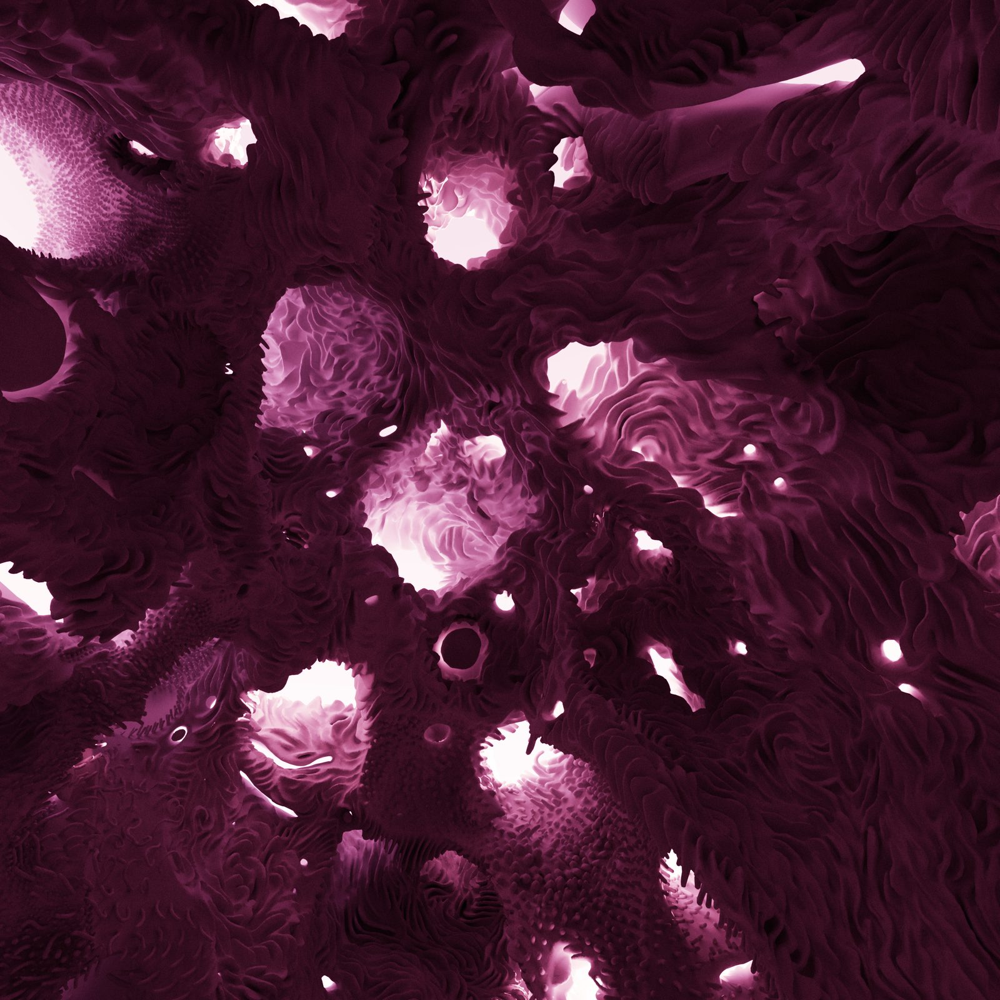
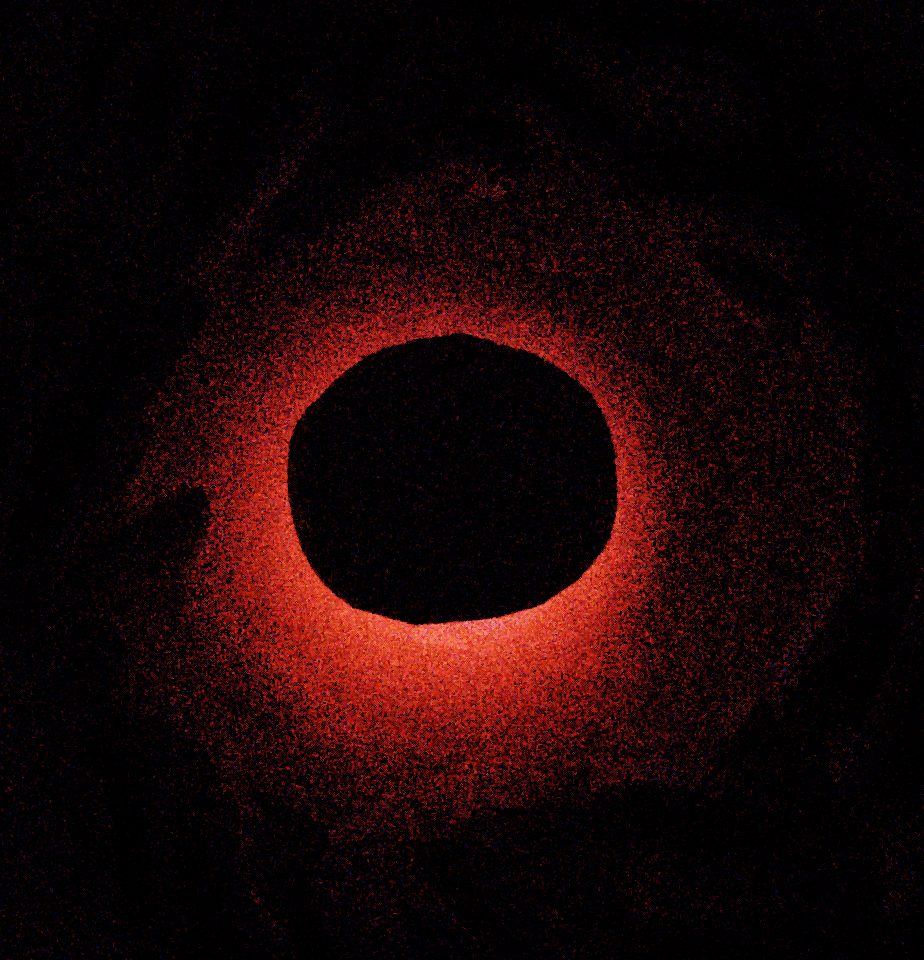
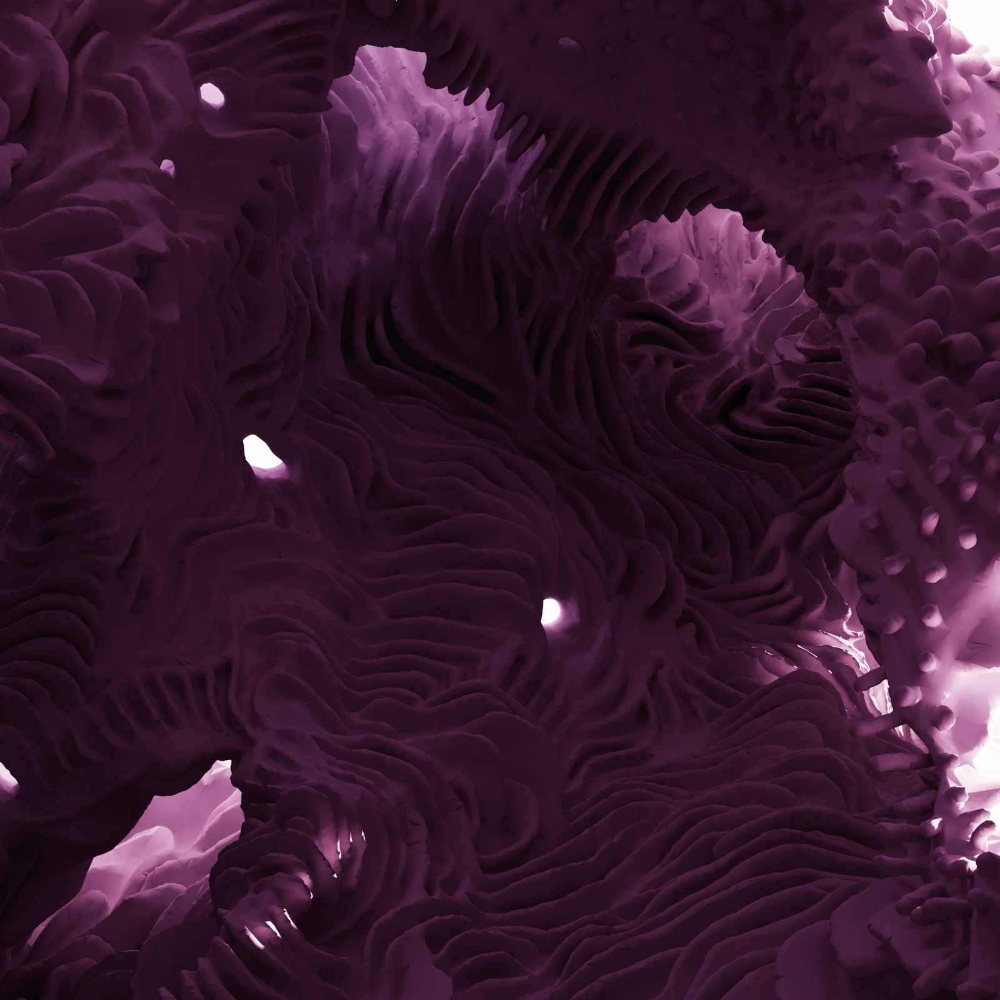
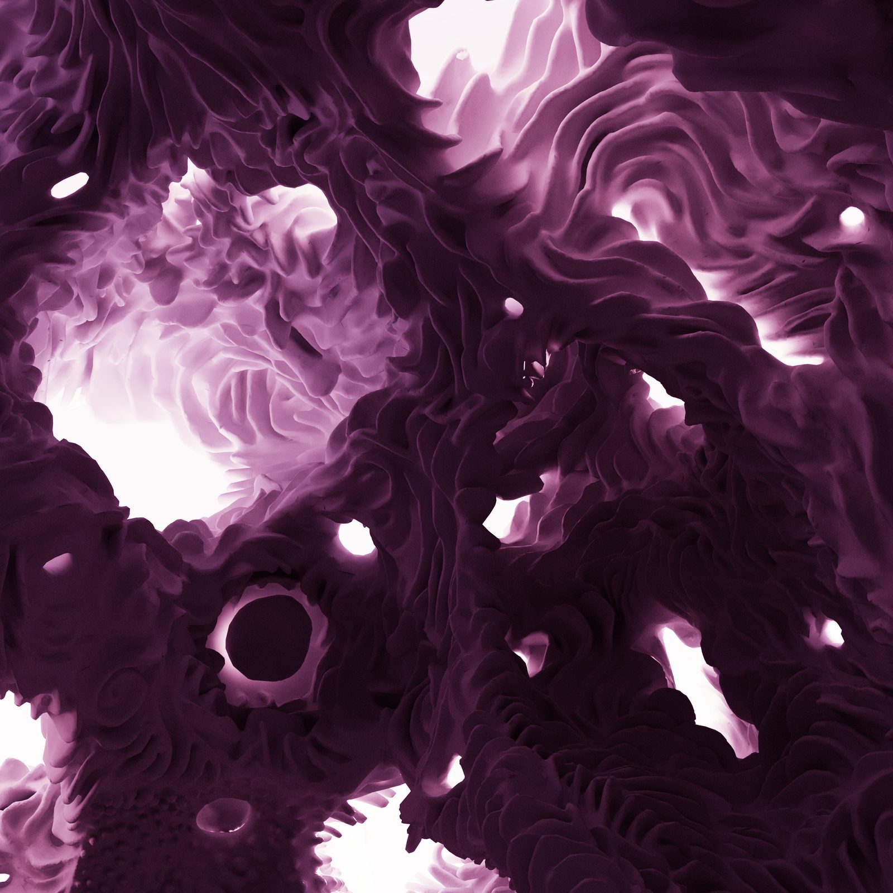

A vast hand-sculpted cave, inhabited at the scale of the body. Inside, a complete cycle of natural light unfolds from morning to night to morning again. The visitor walks freely through the space with nothing to hold, nothing to press. No interface. Just the body, the architecture, and the changing light.
Une vaste caverne sculptée à la main, habitée à l’échelle du corps. À l’intérieur, un cycle complet de lumière naturelle se déploie du matin à la nuit, puis au matin de nouveau. Le visiteur marche librement dans l’espace, rien à tenir, rien à presser. Aucune interface. Seulement le corps, l’architecture et la lumière qui change.
Dawn spills through apertures in the cave walls. Midday sun floods the interior. Twilight pulls long purple shadows across folded, sculptural surfaces, then darkness takes the space completely. A brief night. Then slowly, from somewhere deep in the stone, morning returns.
L’aube se répand par les ouvertures percées dans les parois. Le soleil de midi inonde l’intérieur. Le crépuscule étire de longues ombres violettes sur les surfaces plissées et sculptées, puis l’obscurité s’empare entièrement du lieu. Une brève nuit. Puis lentement, depuis quelque part au fond de la pierre, le matin revient.
Every surface was shaped by hand, a process closer to clay sculpture than to digital modeling. The space has the weight and presence of a physical place, given form through the slow, irreversible passage of light.
Chaque surface a été façonnée à la main, par un processus plus proche du modelage de l’argile que de la modélisation numérique. Le lieu possède le poids et la présence d’un espace physique, mis en forme par le passage lent et irréversible de la lumière.
A free downloadable PC-VR demo is available: a single moment of the light cycle, frozen, to walk through at full scale.
Download the demo on itch.io →
Une version démo PC-VR téléchargeable et gratuite est en ligne : un seul instant du cycle de lumière, figé, à parcourir à pleine échelle.
Télécharger la démo sur itch.io →

Gloam treats architecture as a pinball machine for photons. Every fold, slot, and aperture is a light scooper, shaped to catch the sun and funnel it deep into the interior. The lighting is not simulated in real time: every moment of the day was computed in advance at a fidelity that no live system can match, then played back seamlessly inside the headset. The result is light that behaves the way it does in the physical world: soft, indirect, accumulating in folds and crevices, shifting the entire atmosphere of the space as the hours pass.
Gloam traite l’architecture comme une machine à pinball pour les photons. Chaque pli, chaque fente, chaque ouverture est un capteur de lumière, façonné pour attraper le soleil et le canaliser loin dans l’intérieur. L’éclairage n’est pas simulé en temps réel : chaque instant de la journée a été calculé à l’avance, à une fidélité qu’aucun système en direct ne peut atteindre, puis restitué de façon continue dans le casque. Il en résulte une lumière qui se comporte comme dans le monde physique : douce, indirecte, s’accumulant dans les plis et les anfractuosités, déplaçant toute l’atmosphère du lieu à mesure que les heures passent.
This gives the cave something that virtual spaces almost never have: the quality of a real place. Light defines the architecture the way it does in the work of Louis Kahn or James Turrell, accumulating slowly, shaping the space as much as the stone does.
Cela donne à la caverne ce que les espaces virtuels n’ont presque jamais : la qualité d’un lieu réel. La lumière y définit l’architecture comme elle le fait dans l’œuvre de Louis Kahn ou de James Turrell, s’accumulant lentement, façonnant l’espace autant que la pierre.

We're made for the light of a cave and for twilight. Twilight is the time we see best. When we dim the light down, and the pupil opens, feeling comes out of the eye like touch.
Nous sommes faits pour la lumière d’une caverne et pour le crépuscule. Le crépuscule est le moment où nous voyons le mieux. Quand la lumière baisse et que la pupille s’ouvre, la sensation sort de l’œil comme un toucher.


The project takes its name from the French expression entre chien et loup, the moment between dog and wolf, when twilight makes the familiar strange. It is the threshold between the known and the unknowable, the domestic and the wild. In this liminal light, the cave becomes something more than a space: it becomes an experience of the sublime.
Le projet emprunte son nom à l’expression entre chien et loup, cette heure où le crépuscule rend étrange ce qui est familier, où l’on ne distingue plus le chien du loup. C’est le seuil entre le connu et l’inconnaissable, le domestique et le sauvage. Dans cette lumière liminale, la caverne devient plus qu’un espace : elle devient une expérience du sublime.
Edmund Burke defined the sublime as an aesthetic experience born from vastness, obscurity, and the interplay of darkness and light. Gloam is a direct translation of these ideas into spatial form. A space designed to evoke wonder through scale, through the slow revelation of form by moving light, and through the irreducible strangeness of inhabiting architecture that could not exist in the physical world: a digital landscape that magnifies the mind's movement through infinite terrain.
Edmund Burke définissait le sublime comme une expérience esthétique née de l’immensité, de l’obscurité et du jeu entre l’ombre et la lumière. Gloam est une traduction directe de ces idées en forme spatiale. Un espace conçu pour susciter l’émerveillement par l’échelle, par la lente révélation des formes sous la lumière mouvante, et par l’étrangeté irréductible qu’il y a à habiter une architecture qui ne pourrait exister dans le monde physique : un paysage numérique qui amplifie le mouvement de l’esprit à travers un terrain infini.

A holy space within reality, animated by the sun's slow, imperceptible passage.
Un espace sacré au sein du réel, animé par le passage lent et imperceptible du soleil.

Every surface in Gloam was shaped by hand using VR controllers, a process closer to clay sculpture than to digital modeling. The artist stands inside the space as it is built, working at full architectural scale with movements of the arm and wrist.
Chaque surface de Gloam a été façonnée à la main à l’aide de manettes VR, par un processus plus proche du modelage de l’argile que de la modélisation numérique. L’artiste se tient à l’intérieur de l’espace pendant qu’il se construit, travaillant à pleine échelle architecturale par des mouvements du bras et du poignet.
This produces a quality of surface impossible to achieve through algorithmic or parametric generation: organic, gestural, carrying the physical memory of the hand that made it. The forms read as implied and interrupted sculptures, masses half-revealed by shadow and the moving light. In a landscape flooding with generated imagery, Gloam is a radical assertion of craft.
Il en résulte une qualité de surface impossible à obtenir par génération algorithmique ou paramétrique : organique, gestuelle, portant la mémoire physique de la main qui l’a faite. Les formes se lisent comme des sculptures suggérées et interrompues, des masses à demi révélées par l’ombre et la lumière en mouvement. Dans un paysage submergé d’images générées, Gloam est une affirmation radicale du geste artisanal.


In VR, the viewer inhabits the cave at full scale, walking through the space at 1:1 with no controllers, looking up into the vaulted ceiling, experiencing the light cycle from inside the architecture.
En VR, le visiteur habite la caverne à pleine échelle, parcourant l’espace à l’échelle 1:1 sans manette, levant les yeux vers la voûte, éprouvant le cycle de lumière depuis l’intérieur de l’architecture.
For gallery contexts, the work becomes a multi-channel synchronized video installation. Four to ten screens surround the viewer in a darkened room, each showing a different angle of the same light cycle playing in perfect sync. Because the cycle runs from full darkness to full brightness and back, the entire room plunges into black every few minutes as night falls across all screens at once. Then slowly, dawn returns. The gallery itself becomes the architecture. The audience sits inside the light.
En contexte de galerie, l’œuvre devient une installation vidéo multicanal synchronisée. De quatre à dix écrans entourent le visiteur dans une salle obscure, chacun montrant un angle différent du même cycle de lumière, en synchronisation parfaite. Comme le cycle va de l’obscurité totale à la pleine clarté puis revient, toute la salle plonge dans le noir toutes les quelques minutes, la nuit tombant sur tous les écrans à la fois. Puis lentement, l’aube revient. La galerie elle-même devient l’architecture. Le public est assis à l’intérieur de la lumière.
Platform: Unity 6, PC-VR (any OpenXR headset, PC-tethered)
Lighting: 16,020 offline-rendered 8K lightmaps across ~800 frames of a full day-night cycle, played back at 90fps
Geometry: Hand-sculpted in VR using controllers (Oculus Medium, Adobe Medium), 21,837,004 triangles
Light cycle: Full solar simulation — sunrise through night, continuous loop
Plateforme : Unity 6, PC-VR (tout casque OpenXR, relié à un PC)
Éclairage : 16 020 lightmaps 8K rendus hors ligne sur environ 800 images d’un cycle jour-nuit complet, restitués à 90 ips
Géométrie : Sculptée à la main en VR à l’aide de manettes (Oculus Medium, Adobe Medium), 21 837 004 triangles
Cycle de lumière : Simulation solaire complète — du lever du soleil à la nuit, en boucle continue
VR presentation: PC-VR: any OpenXR headset tethered to a dedicated PC. Room-scale, no controllers and no hand-tracking. The visitor simply walks through the space.
Gallery presentation: Multi-channel synchronized video installation (4–10 screens/projectors). Darkened room. All channels play the same light cycle in perfect sync. The room itself becomes the architecture.
Présentation VR : PC-VR : tout casque OpenXR relié à un PC dédié. À l’échelle de la pièce, sans manette ni suivi des mains. Le visiteur marche, simplement.
Présentation en galerie : Installation vidéo multicanal synchronisée (4–10 écrans/projecteurs). Salle obscure. Tous les canaux diffusent le même cycle de lumière en synchronisation parfaite. La salle elle-même devient l’architecture.